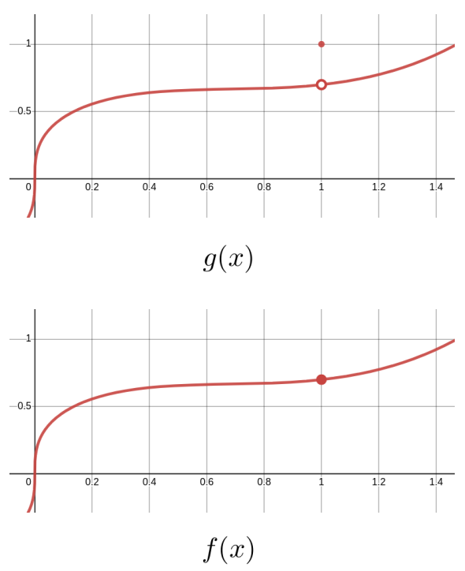

Subsection 14.1.1 The Limit of a Composition and Continuity at a Point
In the old days when people invented a new function they had something useful in mind. Now, they invent them deliberately just to invalidate our ancestors’ reasoning, and that is all they are ever going to get out of them.
―Henri Poincarè (\(1854\) -- \(1912\)) 1
In this section we will state several theorems about limits which we will need in the sections following. The limit concept is very subtle and our understanding of it is still quite intuitive. We are not yet quite prepared to prove these theorems so we will leave these theorems unproven for now. Our immediate goal is simply to understand what they say and learn how to use them. In the next section we will begin using these theorems to show how the limit in [cross-reference to target(s) "DEFDerivative" missing or not unique] allows us to recapture all of the major results we used in Part I of this text.
In
Chapter 17 we will finally discard our intuitive definition of a limit (
[cross-reference to target(s) "DEFLimitAtInfinity-Intuitive" missing or not unique]) and formally define both a limit at infinity (
[cross-reference to target(s) "DEFlimit-at-neginfinity" missing or not unique]) and a limit at a point (
[cross-reference to target(s) "DEFlimits-at-real" missing or not unique]). Then we will return to the theorems in this section and (finally) prove rigorously that they are, in fact, true. Until then any result which relies on the theorems in this section should be considered contingent.
In
Chapter 12 we stated the following three theorems about limits “at infinity.” \begin{enumerate} \item the limit of a sum is the sum of the limits (
Theorem 12.7), \item the limit of a product is the product of the limits (
Theorem 12.8) and, \item the limit of a quotient is the quotient of the limits (
Theorem 12.9). \end{enumerate} All three of these theorems remain true if
\(x\) is approaching some finite number,
\(a\text{,}\) instead of infinity.
Theorem 14.1. The Limit of a Sum is the Sum of the Limits.
Let \(a\) be some real number. Suppose that the functions \(f(x)\) and \(g(x)\) are defined on some open interval about \(a\) except, possibly, at \(a\) itself. Then if \(\limit{x}{a}{f(x)}=L\) and \(\limit{x}{a}{g(x)}=M,\) then
\begin{equation*}
\limit{x}{a}{\left[f(x)+g(x)\right]}=L+M
=\limit{x}{a}{f(x)}+\limit{x}{a}{g(x)}.
\end{equation*}
Theorem 14.2. The Limit of a Product is the Product of the Limits.
Let \(a\) be some real number. Suppose that the functions \(f(x)\) and \(g(x)\) are defined on some open interval about \(a\) except, possibly, at \(a\) itself. If \(\limit{x}{a} {f(x)}=L\) and \(\limit{x}{a}{g(x)}=M\) then
\begin{equation*}
\limit{x}{a} {\left(f(x)\cdot g(x)\right)}=\left(\limit{x}{a}{f(x)}\right)\cdot\left(\limit{x}{a}{g(x)}\right)
= L\cdot M.
\end{equation*}
Theorem 14.3. The Limit of a Quotient is the Quotient of the Limits.
Let \(a\) be some real number. Suppose that the functions \(f(x)\) and \(g(x)\) are defined on some open interval about \(a\) except, possibly, at \(a\) itself. Then if \(\limit{x}{a} {f(x)}=L\) and \(\limit{x}{a}{g(x)}=M\neq0\) then
\begin{equation*}
\limit{x}{a}
{\frac{f(x)}{g(x)}}=\frac{\limit{x}{a}{f(x)}}{\limit{x}{a}{g(x)}}
= \frac{L}{M}.
\end{equation*}
Notice that in addition to changing
\(\infty\) to some real number,
\(a\text{,}\) we have added two qualifications to the statement of each of these theorems from
Chapter 12: \begin{enumerate} \item “Suppose that the functions
\(f(x)\) and
\(g(x)\) are defined on some open interval about
\(a\)” and, \item “except, possibly, at
\(a\) itself” \end{enumerate} To see why these are necessary recall that we’re going to use limits to define the derivative as in
[cross-reference to target(s) "DEFDerivative" missing or not unique] so we’ll need to evaluate the limit
\(f^\prime(x)=\tlimit{h}{0}{\frac{f(x+h)-f(x)}{h}}\) . Clearly the expression
\(\frac{f(x+h)-f(x)}{h}\) is not defined at
\(h=0\text{.}\) But we’re only interested in its value
in the limit as
\(h\rightarrow0\) which means that
\(h\) must be able to get close to
\(0\text{.}\) That is, there must be an open interval around
\(0\) where the expression
\(\frac{f(x+h)-f(x)}{h}\) is defined.
But we don’t care if \(\frac{f(x+h)-f(x)}{h}\) is defined at \(h=0\) or not. It is irrelevant to our purpose. So we state explicitly that we do not consider whether \(h=0\text{.}\)
Ok, but why did we insert the word “possibly”? Wouldn’t it be enough to simply say “except at \(a\)”?
We need to say “possibly” because these theorems, like all theorems, are stated with as much generality as possible. For example, consider the function
\(f(x)=2x\text{.}\) Had we not included “possibly” in the conditions of our theorems the limit:
\(\tlimit{x}{3}{2x}\text{,}\) which is clearly equal to
\(6\text{,}\) would have to be considered undefined because
\(f(x)=2x\) is defined at
\(x=3\text{.}\) This distinction\aside{In the eighteenth century there was a, public, protracted, and vitriolic argument between
Benjamin Robins 2 and
James Jurin 3 over exactly this point. Jurin would have claimed that the statement
\(\tlimit{x}{3}{2x} = 6\) is meaningless. Robins would have said it has meaning because it is obviously true. The point here is not that either man was right or wrong, but rather that it depends on how we define limits. By one definition Robins was correct, by another Jurin was. Their controversy was the result of the incomplete understanding of limits that prevailed at the time.} may seem like a very fussy, and unimportant detail right now, but it will be important when we discuss the meaning of continuity in
[cross-reference to target(s) "SEClimit-comp-cont" missing or not unique].
Example 14.4.
Suppose
\begin{equation*}
f(x)=
\begin{cases}
2x \amp \text{if } x\neq3\\
10 \amp \text{if } x=3
\end{cases}.
\end{equation*}
Then
\begin{equation*}
\limit{x}{3}{f(x)}= 6.
\end{equation*}
In particular the limit is not \(10\text{.}\) Here is how we would evaluate this limit using the tools we currently have at our disposal. We’re interested in the limit as \(x\rightarrow3\) so in particular we do not need to consider the case when \(x=3\text{.}\) But as long as \(x\neq3\) we have \(f(x)=2x\) so
\begin{equation*}
\limit{x}{3}{f(x)}= \limit{x}{3}{2x}.
\end{equation*}
As \(x\) gets close to \(3\) it is clear that \(2x\) gets close to \(6\text{.}\) Therefore
\begin{equation*}
\limit{x}{3}{f(x)}= 6.
\end{equation*}
Notice that our reasoning is a little vague in the last step because we had to resort to the phase “gets close to,” and we know from our work in
~ 12.4 that this is not a precise phrase. This is the best we can do now because we have not yet rigorously defined a limit. We will do that in
[cross-reference to target(s) "CHAPTERcha:formal-limits" missing or not unique].
Problem 14.5.
By reasoning in a manner similar to
Example 14.4 show that
\(\tlimit{x}{3}{f(x)}=9\) for each function.
(a)
\(f(x)=x^2\)
(b)
\(f(x)=
\begin{cases}
x^2 \amp \text{if } x\neq3\\
\text{undefined } \amp \text{if } x=3
\end{cases}\)
It will be tedious to write (and to read) the phrase “Suppose that \(f(x)\) is defined on some open interval about \(a\) except, possibly, at \(a\) itself” every time we need it so it is customary to say something more like “Suppose \(f(x)\) is defined near \(a\)” instead. Because we are trying to be as precise, and rigorous as possible we will formalize this by redefining the word near.
Definition 14.6. Near.
We say that \(f(x)\) has some property \term{near}\aside{Notice that this is not what “near” means in ordinary speech. This is one of the things that makes it difficult to read mathematics. We routinely co-opt words from natural languages (like English) and redefine them to fit our needs. In this case our purpose requires that we change the definition of “near” slightly as you’ve seen. Because “near” is a common word and you have a lifetime of experience using it, it can be very difficult to cast off your preconceptions. The familiar definition you learned in childhood will intrude and cause confusion. It is hard to overcome this. Refer back to the definition frequently until you have internalized the mathematical definition. } \(x=a\) if \(f(x)\) has that property on an open interval about \(x=a\text{,}\) except possibly at \(a\) itself.
We have the following theorem.
Theorem 14.7. The Limit of a Constant is the Constant.
Suppose \(a\) and \(L\) are real numbers, and \(f(x)=L\) near \(a\text{.}\) Then
\begin{equation*}
\limit{x}{a}{f(x)}=L.
\end{equation*}
Notice that
Theorem 14.7 would be considerably less useful had we not required that
\(f(x)=L\) for
\(x\) near
\(a\text{,}\) rather than
\(f(x)=L\) on its entire domain. For example, as stated
Theorem 14.7 allows us to conclude that if
\begin{equation*}
H(x) =
\begin{cases}
1\amp \text{ if } x\ge0\\
-1\amp \text{ if } x\lt0
\end{cases}
\end{equation*}
then
\begin{equation*}
\limit{x}{5}{H(x)}=1
\end{equation*}
and
\begin{equation*}
\limit{x}{-5}{H(x)}=-1
\end{equation*}
because there are open intervals about \(x=5\) and \(x=-5\) where \(H(x)=1\text{,}\) and \(H(x)=-1\text{,}\) respectively.
Since there is no such interval about \(x=0\text{,}\) \(\tlimit{x}{0}{H(x)}\) is undefined.
Drill 14.8.
(a)
Find an open interval about \(5\) where \(H(x)=1\text{.}\)
(b)
Find an open interval about \(-5\) where \(H(x)=-1\text{.}\)
Drill 14.9.
Suppose
\begin{equation*}
f(x)=
\begin{cases}
\ \ 1;\amp \text{ if } x\gt 1 \text{ or if } x=-2\\
-2;\amp \text{ if } x\le1 \text{ and } x=-2.
\end{cases}
\end{equation*}
Determine whether the following statements are true or false.
(a)
\(f(x)= 1\) near \(x= 4\text{.}\)
(b)
\(f(x)= 1\) near \(x= 1\text{.}\)
(c)
\(f(x)= -2\) near \(x=1 \text{.}\)
(d)
\(f(x)= 1\) near \(x=-2 \text{.}\)
(e)
\(f(x)= -2\) near \(x=-2 \text{.}\)
(f)
\(f(x)= 0\) near \(x= 0\text{.}\)
Problem 14.10.
\noindent Explain, that the following statements are true by citing
~ 14.1 through
~ 14.7 as needed.
(a)
\(\limit{x}{0}{\left(\frac{5x}{x}+\frac{\pi x}{x}\right)}=5+\pi\)
(b)
\(\limit{x}{2}{\left(\frac{x-2}{x-2}+\frac{3x-6}{x-2}\right)}=4\)
(c)
\(\limit{x}{5}{\left(2x+3x^2\right)}=85\)
(d)
\(\limit{x}{-1}{\left(\frac{x^2-1}{x+1}+\frac{x^2+3x+2}{x+1}\right)}=-1\)
Problem 14.11.
Notice that neither \(\tlimit{x}{0}{\frac{1}{x}}\) nor \(\tlimit{x}{0}{\left(\frac{-1}{x}\right)}\) exists. However their sum,
\begin{equation*}
\tlimit{x}{0}{\left(\frac{1}{x}+\frac{-1}{x}\right)}=\tlimit{x}{0}{0}=0
\end{equation*}
does exist. Explain why this does not contradict
Theorem 14.1.
Problem 14.12.
Suppose
\(g(x)\neq0\) near
\(x=a\) and
\(\tlimit{x}{a}{\frac{f(x)}{g(x)}}\) exists. Use
Theorem~\ 14.2 to show that if
\(\limit{x}{a}{g(x)}=0\) then
\(\limit{x}{a}{f(x)}=0\text{.}\)\\ \hint{Consider
\(f(x)=\frac{f(x)}{g(x)}\cdot g(x)\) for
\(x\) near
\(a\text{.}\)}\\ \comment{This problem shows that if
\(\limit{x}{a}{g(x)}=0\) then the only way that
\(\limit{x}{a}{\frac{f(x)}{g(x)}}\) can exist is if we have a \lhop Indeterminate. It can also be used to prove
Lemma 14.16 as you will see when we get to it.}
The following Corollary says that if
\(f(x)\) is approaching
\(L_f\) and we multiply
\(f(x)\) by a number,
\(k\text{,}\) then the product
\(kf(x)\) approaches
\(kL_f\text{.}\) It follows from
Theorem 14.7 and
Theorem 14.2.
Corollary 14.13.
If \(\limit{x}{a}{f(x)}=L_f\) and \(k\) is a real number then \(\limit{x}{a}{kf(x)}=k\limit{x}{a}{f(x)}=kL_f.\)
Drill 14.14.
Prove [cross-reference to target(s) "CORConstMultLimit" missing or not unique].
The concept of
continuity is essential to Calculus, but you may have noticed that we have carefully avoided it as much as possible until now. This is because defining continuity is similar to defining the line tagent to a curve (
Definition~\ 5.7). We need to think carefully about what we want the term
continuous to mean, and then craft our definition to capture that meaning. This would have been very difficult to do without a fairly sophisticated understanding of the limit concept.
So stop and think about this for a moment. What do we mean when we say a curve is continuous? A first, intuitive definition usually goes something like this: “A function is continuous if you can draw its graph without lifting your pencil from the paper,” but this is unsatisfactory for a number of reasons. In particular, it is impossible to apply in most cases. Think about it. Have often have you seen the entire graph of any function? Usually we just draw the part neat the origin and put arrowheads on both ends of the graph. We need something more precise.
At the end of
Example~\ 12.65 we remarked that it is only when
\(f(x)\) is continuous at
\(x=g(a)\) that
\(\textcolor{blue}{\tlimit{x}{a}{\textcolor{red}{f(g(x))}}}\) is equal to
\(\textcolor{red}{f}\textcolor{blue}{\left(\tlimit{x}{a}{g(x)}\right)}\text{,}\) but we did not discuss the matter any further. It is time for that discussion.
First, notice that when you think closely about the statement “\(f(x)\) is continuous at \(g(a)\)” it appears to be nonsense, because \(g(a)\) is the value of \(f\) at the single value \(g(a)\) but . Does it make sense to you that a curve can be continuous at a single value of its domain? In ordinary usage the concept of continuity requires an interval to be continuous on, doesn’t it?
Since we need the concept of “continuity at a point,” we define it.
Definition 14.15. Continuity at a Point.
A function \(f\text{,}\) whose domain is an interval in \(\RR\text{,}\) is continuous at \(x=a\) in the interval, if and only if \(\limit{x}{a}{f(x)}=f(a)\text{,}\) (alternatively, if \(\limit{h}{0}{f(a+h)}=f(a)\)).

If \(f\) is continuous at every point in its domain we’ll just call it a continuous function.
The sketch at the right shows that
Definition 14.15 recovers the intuitive notion that a function is continuous if we can draw its graph without lifting pen from page. Both of the functions,
\(f(x)\) and
\(g(x)\) are identical everywhere except at
\(x=1\text{.}\) Clearly, to draw
\(g(x)\text{,}\) which is discontinuous at
\(x=1\text{,}\) we must lift our pen from the page. This is not true of the graph of
\(f(x)\text{,}\) which is continuous.
The following lemma is true and the proof will be valid once the limit theorems have been proven in [cross-reference to target(s) "CHAPTERcha:formal-limits" missing or not unique].
Lemma 14.16. Differentiability Implies Continuity.
If \(f(x)\) is differentiable at \(x=a\) then \(f(x)\) is also continuous at \(x=a.\)
Problem 14.17.
When we were studying horizontal asymptotes in
~ 12.4.2 we encountered
~ 12.25 (the Squeeze Theorem “at” Infinity). But the Squeeze Theorem is also valid if
\(x\rightarrow a\text{,}\) where
\(a\) is a real number.
Theorem 14.18. The Squeeze Theorem (The Finite Case).
If \(\alpha(x)\le f(x)\le \beta(x)\) for \(x\) near \(a\) and
\begin{equation*}
\limit{x}{a}{\beta(x)} = \limit{x}{a}{\alpha(x)} = L
\end{equation*}
then \(\limit{x}{a}{f(x)} = L\) also.
~ 14.18 is illustrated below, but a formal proof will not be given until
[cross-reference to target(s) "CHAPTERcha:formal-limits" missing or not unique].\\ \centerline{\includegraphics*[height=1.4in,width=2.6in]{../Figures/SqueezeThm1}}
Problem 14.19.
Consider the two functions defined in the sketch below:\\ \centerline{\includegraphics*[height=2.5in,width=5.5in]{../Figures/TopSinCurve}}
(a)
Use
~ 14.18 to show that
\(U(x)\) is continuous at
\(x=0\text{.}\) \\ \hint{What functions is
\(U(x)\) caught between?}
(b)
Use
~ 14.15 to show that
\(T(x)\) is not continuous at
\(x=0\text{.}\) \\ \hint{Try the substitution
\(z=\frac1x\) for
\(x\neq0\text{.}\) What would
\(\limit{x}{0}{T(x)}\) look like in terms of
\(z\text{?}\)}
Theorem 14.20. The Limit of a Composition is the Composition of the Limits.
Limits] \label{THEOREMCompositionLimit} Suppose \(\limit{x}{a}{g(x)}=L_g\) and that \(f(x)\) is continuous at \(L_g\text{.}\) Then
\begin{equation*}
\limit{x}{a}{f(g(x))}=f\left(\limit{x}{a}{g(x)}\right)=f(L_g).
\end{equation*}
Essentially this says that we can interchange the function \(f\) and the “\(\lim\)” symbols if \(f\) is continuous at \(g(a)\text{.}\)